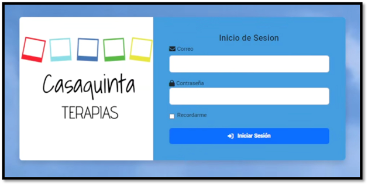
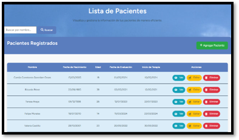
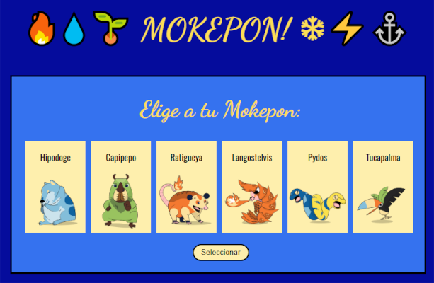
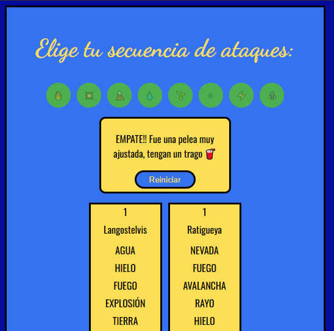

Hola, soy Ian Francisco González Osses.
Tecnico Analista y Programación de Sistemas | Mecanico industrial mención maquinas y herramientas.
Sobre mí
Soy una persona de 24 años, orignalmente me quise dedicar al mundo industrial, por lo que estudie y ejerci como operador CNC desde que me gradue del liceo en 2018 hasta 2020.
En 2021, decidí cambiar mi rumbo profesional hacia el desarrollo digital y tecnológico, motivado sobre todo por como la pandemia cambio el como vemos el mundo y la forma de trabajar lo que me llevo a mirar al mundo del desarrollo digital y tecnológico.
Estudie la carrera de "Tecnico en analisis y programación de sistemas" y actualmente estoy estudiando el lenguaje Python, desarrollo de videjuegos en el motor Unreal Engine y desarrollo con inteligencia artificial, ademas cuento con conocimientos en desarrollo web utilizando HTML, CSS y JavaScript.
Mi formación técnica y mi paso por el mundo industrial como operador CNC me han permitido desarrollar una sólida ética de trabajo, habilidades blandas y capacidad de resolución de problemas.
He participado en el desarrollo de sistemas web, como un Sistema de gestión de fichas clínicas utilizando Laravel y MySQL (proyecto de titulo), demostrando mi capacidad para llevar a cabo proyectos reales y funcionales.
Me considero una persona responsable, autodidacta y comprometido con seguir creciendo profesionalmente en el área del desarrollo digital y tecnológico.
Titulos
- Técnico en Análisis y Programación de Sistemas - Instituto Profesional San Sebastian (2022 - 2025)
- Mecánico Industrial mención Máquinas y Herramientas - Centro Educativo Salesianos Alamada (2014 - 2018)
Cursos
- Curso de Unreal Engine Configuración y Entorno de desarrollo - Platzi (2025)
- Curso Herramientas de AI para Developers - Platzi (2025)
- Curso de Unit Testing en Python - Platzi (2025)
- Curso de Python - Platzi (2025)
- Curso Profesional Git y GitHub - Platzi (2024)
- Curso de Administración de Servidores - Platzi (2024)
- Curso de Programación basica - Platzi (2024)
Proyectos
-
Sistemas de Gestión de Fichas Clínicas
Aplicación web para facilitar la gestión de las fichas clínicas de los pacientes de la Clínica Casaquintas Terapia.
El proyecto abarcó el desarrollo de un diseño simple e intuitivo, la implementación de una base de datos, un motor de búsqueda, la gestión de usuarios y la puesta en marcha en la nube.
Realizado con Laravel, MySQL y PHP.  -
Mokepon
Mi propia version del juego Mokepon inspirado en la famosa franquisia de nintendo, el cual es un juego de combate por turnos simple y rapido.
El proyecto incluye un sistema de selección de personajes, combate por turnos y una interfaz amigable.
Realizado con HTML, CSS y JavaScript. Sin usar algun framework o librerías externas durante un curso de programación basica. 
Proyectos en desarrollo
-
Calculadora de Conversion ASA
Una aplicacion que permita realizar conversiones de items para el mercado del juego "ARK Survival Ascended".
El proyecto incluirá un sistema de conversion de items, una interfaz amigable y calculo de nivel de cierta criaura del juego buscada principalmente en eventos.
Se esta desarrollando con Python y por ahora no tiene interfaz grafica y aun esta en un estado muy basico. -
Finca Embrujada (nombre provisional)
Un videojuego inde de suspenso en primera persona, donde el jugador se adentra en una finca abandonada para robar un valioso licor antiguo, el cual es custodiado por un malvado espiritud.
El proyecto aun esta en la etapa de pre-producción y se planea desarrollar una demo jugable en un futuro cercano.
Se desarrollara con Unreal Engine 5 y se basara en una popular leyenda urbana chilena.
Contacto
Si desea ponerse en contacto conmigo, puedes hacerlo a través de los siguientes medios:
 +56 9 7140 4467
+56 9 7140 4467
 LinkedIn
LinkedIn
 GitHub
GitHub
Estoy abierto a oportunidades laborales, colaboraciones en proyectos y cualquier duda de mis proyectos actuales en desarrollo.